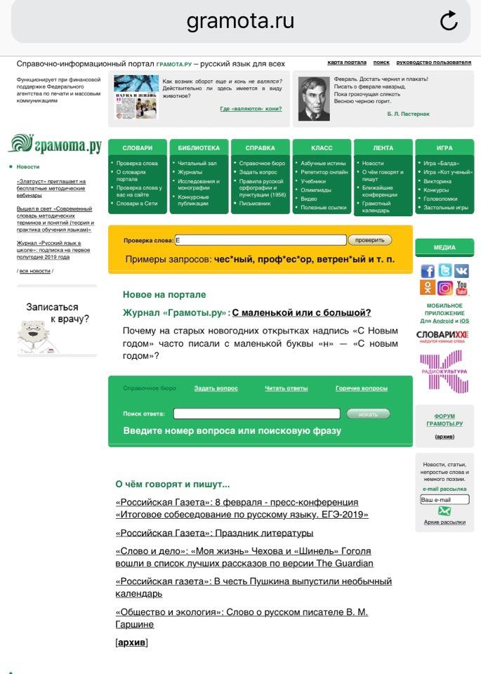

Меня зовут:Павлова Александра Станиславовна.
Место учебы:НИУ ВШЭ,гуманитарный факультет, школа филологии,первый курс.
Научные интересы:Проза,комментирование и интерпритация текстов произведений.
Немного фактов обо мне:Люблю кошек,кофе и комиксы. По знаку зодиака телец. Любимые цвета сиреневый и голубой
Cовременные технологии проникли во все сферы и гуманитарные науки не являются исключением.Научная деятельность в литературе уже не может существовать без использования современных технологий. Существование электронных библиотек и отцифрованных документов значительно упрощают происк и хранение информации.Стало возможным применять формальные и точные методы в литературоведение. Также в научных исследованиях используются графики и таблицы эксель. Все это помогает филологу в его научной деятельности.

1)Мне кажется,очень удобно,что строка для проверки слов находится посередине. Не нужно искать.
2)Сайт неудачно сконструирован.Вот строка для проверки слов,а ниже для поиска ответов,а между ними зачем-то новости о новинках портала, а вверху маленькими буковками поиск.Глаза разбегаются.Мне кажется эти строки стоило сделать рядом и одного цвета.
3)Мне не нравится цветовая гамма. Все зеленное и белое , а тут эта желтая строка.Все внимание на нее.Но есть важная информация на сайте,которая почему-то не выделена должным образом.
4)Название сайта расположено где-то сбоку,стоило бы разместить выше и крупнее. Можно было бы поместить название на месте цитат из произведений, а цитаты на место названия.
5)Остается многосвободного пространства в центре,а вся информация сконцентрирована в одном месте и как-то в кучу. Это очень полезный сайт,но мне им пользоваться не очень удобно.